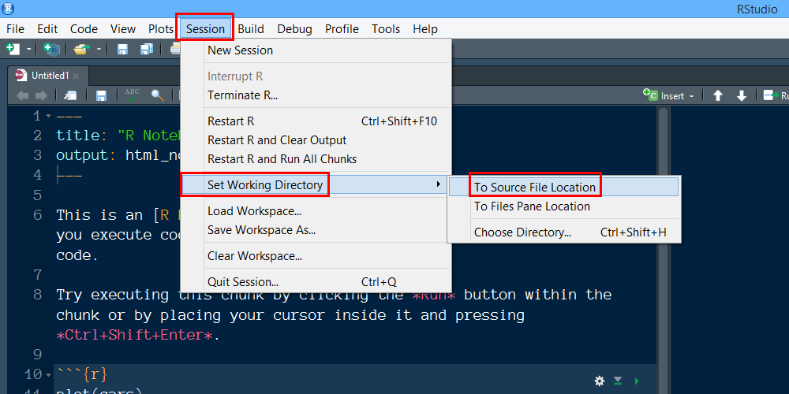
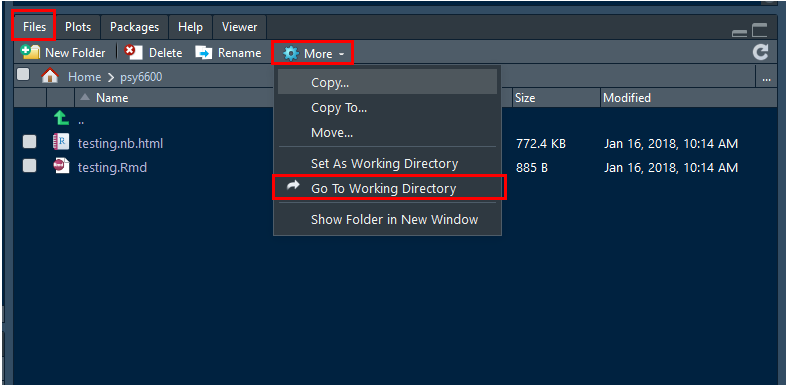

4 Kniting Notebooks
4.1 Storing all associated files
If you are using any files, such as datasets or images, they need to be stored in the same folder location as the R Notebook (.Rmd file).
This folder location must be the Working Directory for the R Studio session. If you opened your .Rmd notebook file by double-clicking on its name, then this should be the case.
4.2 Setting the working directory
To ensure that R Studio knows where to find the files, you can manually set the Working Directory through the menu:
- Click
Session - Select
Set Working Directoryby hovering your mouse over it - Click on
To Source File Location

You can double check that you were successful by
- Click on the
Filestab in the many-tab panel - Click on the button with the gear that says
More - Click
Go To Working Directory
At this point you should see all the files that reside in the folder location where the open .Rmd files is also saved.
